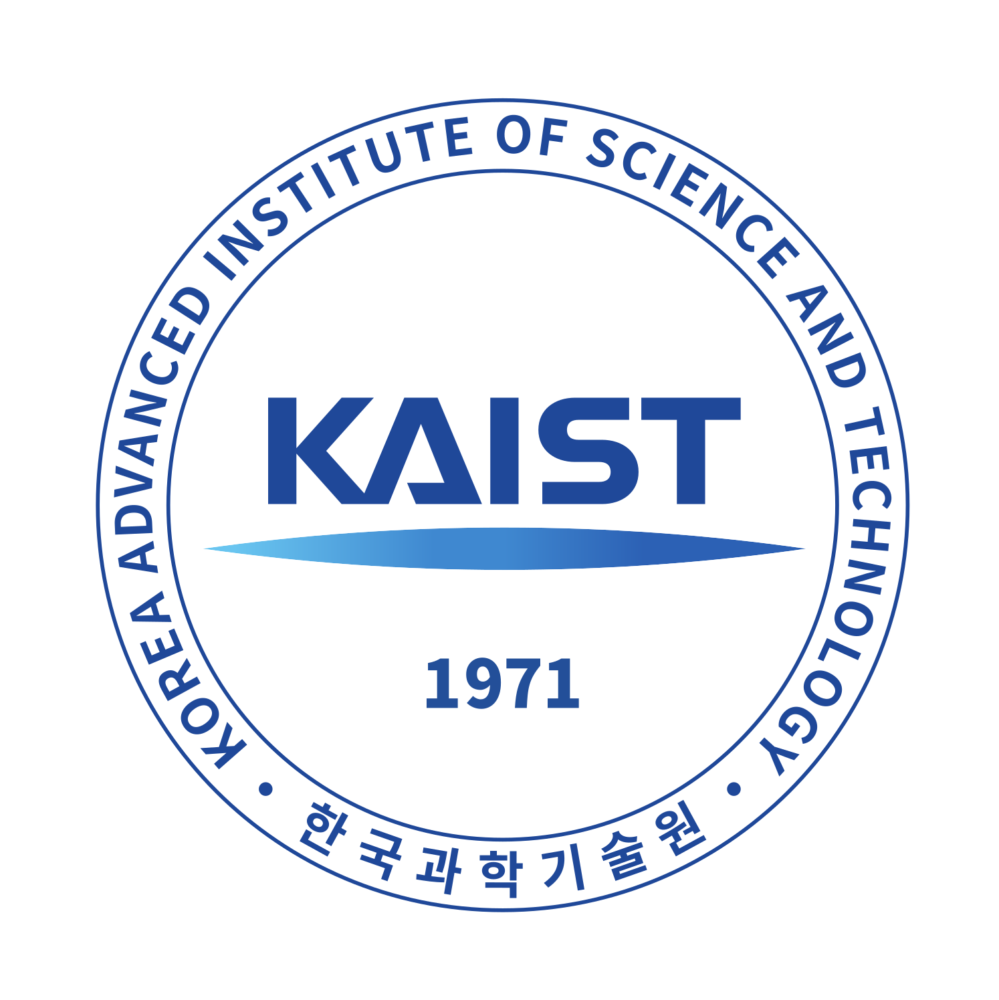
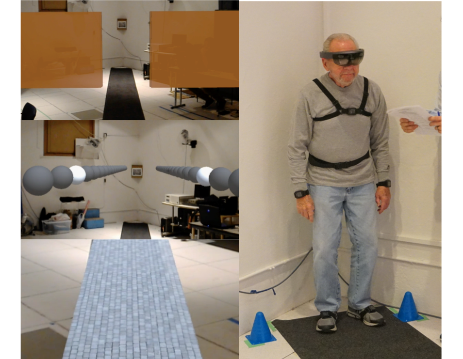
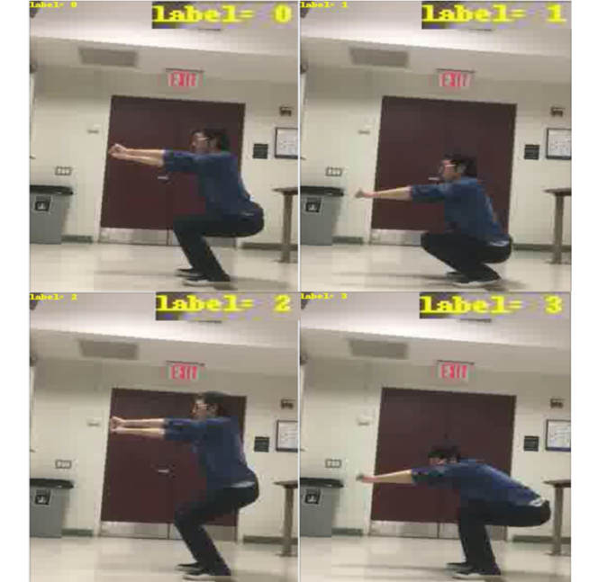
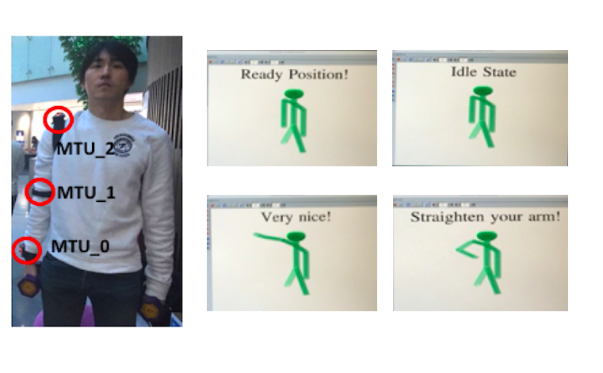

Home
I am Changmin Seo, a first year master’s student in Department of Computer Science at Columbia University. I am currently studying in machine learning track and undertaking a research project with Prof. Steven K. Feiner in CGUI Lab.
My current academic interests cover Machine Learning, Computer Vision and Human-Computer Interaction.
Education
 |
Columbia University Master of Science in Computer Science, Machine Learning Track New York, NY Expected Dec 2018 |
|  |
Korea Advanced Institute of Science and Technology (KAIST) B. S. Double Major in Computer Science and Technology Management Rank: 1st out of 40 in Computer Science Department Awards: KAIST summa cum laude Computer Science KAIST Dean's List Award National Science and Engineering Scholarship Daejeon, KR Feb 2016 2016 2015 2014 |
Research Experience
|  |
Microsoft HoloLens for Parkinson’s Disease Research Project at Columbia University CGUI Lab (Prof. Steven Feiner) Changmin Seo, Taehwan Kwon Developed Augmented Reality system runs on Microsoft HoloLens with Unity for Parkinson's Disease Rehabilitation; Conducted experiments to show feasibility of using HoloLens to increase gait speed in people with Parkinson's Disease |
|  |
Project: Machine Trainer using Computer Vision Final Project in Deep Learning for Computer Vision Course (Prof. Peter Belhumeur) Changmin Seo, Taehwan Kwon Built a model that performs motion classification from 2D exercise videos using OpenPose 2D, MLP and LSTM; Tested our model with test data and reached to 96.16% of test accuracy on motion classification task especially on Squat |
|  |
Project: Machine Trainer (Training Human with Trained Machine and Vice Versa) Qualcomm Innovation Awards 2016 Changmin Seo, Taehwan Kwon Designed and developed the prototype of Machine Trainer which is an AI-personal trainer (fitness coach) estimates human pose on exercise in real-time and provide advice on the pose; The prototype consists of a set of sensors that attached to a human body, pre-trained deep neural network and a software for visualization and interaction |
Professional Experience
SquarePlan
Software Engineer
Software Engineer
New York, NY
Jun 2018 - Aug 2018
Jun 2018 - Aug 2018
Munhwa Broadcasting Corporation (MBC)
Research Assistant
Research Assistant
Seoul, KR
Jun 2016 - Aug 2016
Jun 2016 - Aug 2016
Kiswe Mobile
Research Intern
Research Intern
Murray Hill, NJ
Jul 2015 - Aug 2015
Jul 2015 - Aug 2015
Xeogen
Software Engineer
Software Engineer
Seoul, KR
Jan 2011 - Mar 2013
Jan 2011 - Mar 2013
Nexon
Software Engineer Intern
Software Engineer Intern
Seoul, KR
Jun 2009 - Jul 2009
Jun 2009 - Jul 2009
Copyright © Changmin Seo 2017